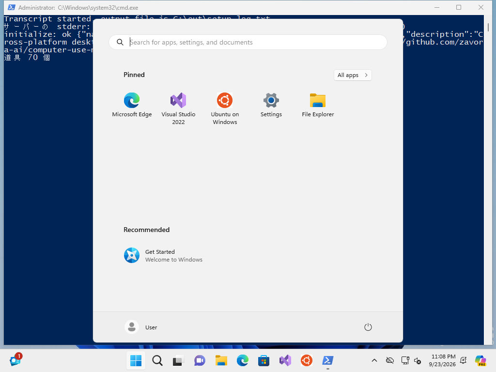

2026-09-24 ／ 「撮影までテストしてみて。環境は Sandbox と Hyper-V の両方」の Hyper-V 側の結果。Sandbox 側は 9/20 に済み。あわせて「Hook で毎回承認を求められて止まる」の対処も書いた。
C:\Users\muro\harness-vm\dl\）だけ。zip（23 GB）は消した。既存の「Codex VM」は触っていない。
↑ VM の中の MCP サーバーが撮った 1 枚。左上に台本の出力、手前にスタートメニュー（キー入力の Win キーが 1 回余分に効いたもの。撮影には影響なし）。
| Windows Sandbox（9/20） | Hyper-V（9/24） | |
|---|---|---|
| 要るもの | Windows Pro 以上。機能を有効化 | Windows Pro 以上。利用者を Hyper-V Administrators に入れて再起動（管理者の窓を 1 回） |
| 元の OS | 母艦の Windows を流用（用意なし） | 評価版を 1 回だけ取る（23 GB → 45 GB） |
| 起動〜撮影 | 約 2 分 | 約 5 分（初回起動の待ち + 174 秒） |
| 持ち込み / 持ち出し | 共有フォルダ（in は読み取り専用、out） | Copy-VMFile（一方通行）/ PowerShell Direct で読む |
| 台本の起動 | LogonCommand | 母艦からのキー入力（Win+R → 管理者として powershell → UAC に Alt+Y） |
| 同時に | 1 つだけ | 何個でも（メモリ次第） |
| 中の状態を残す | できない（閉じると消える） | 差分ディスクなので、残す・戻す・複製が自由 |
| 向く場面 | 1 回きりの画面操作 | 状態を作り込む・並べて動かす・Sandbox が無い機械 |
| 何 | どう直したか |
|---|---|
| 統合サービスの名前が日本語（「ゲスト サービス インターフェイス」）で、英語名では見つからない | Id で選ぶ |
Restart-VM -Force を 2 回続けたら Windows が Recovery 画面で止まった | 再起動そのものをやめた（台本はキー入力で起動） |
Startup フォルダに台本を置いても、パスワードを付ける net user が UAC で断られる | 管理者として起動し、UAC を Alt+Y で通す |
| 初回起動は heartbeat が OK でも画面が出るまで 1〜2 分。早く打ったキーは捨てられる | パスワードが通るまで 40 秒ごとに打ち直す。台本側は 2 重起動を防ぐ印を置く |
WSL の curl で /mnt/c に書くと 13 MB/s（Windows 側の curl.exe なら 225 MB/s） | Windows 側で取る |
この機械の Claude Code に HARNESS_UNATTENDED=1 を付けた（.claude/settings.local.json。git には入らない）。Claude Code を起動し直すと効く。
D-2026-09-24-01 に、あなたの言葉のまま書いた。.loop/ が入っていないこと、展開先で点検が通ることを確かめて出す。